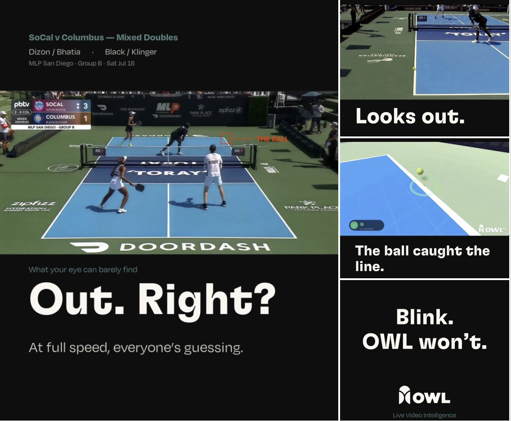

Owl AI
Real-time computer-vision systems for live sports broadcasts. A wrong call goes out to a national audience in seconds — so reliability engineering is the whole job. We run the platform as GCP microservices on Cloud Run backed by dedicated GPU infrastructure for Fox Sports broadcast, with a Triton-hosted model zoo — RF-DETR, ViTPose, SAM 3.1 and TrackNetV5 — feeding a 7-camera, 240 FPS SRT inference pipeline.
Pickleball · line calling
LiveLive match line calling for Major League Pickleball, aired on PickleballTV, FOX and YouTube. Broadcast camera streams are ingested at 240 FPS via GStreamer with GPU-optimized reads; the system returns a definitive in/out call within 5–10 seconds — including how close the bounce was to the line — with the on-air graphic rendered in Godot, where I rebuilt the render path to cut MP4 latency from 10 s to 2 s so replays hit the broadcast almost the moment the call is made. I fine-tuned TrackNetV5 for ball tracking — lifting F1 from 95.1% to 99.1% and serving it under TensorRT at 120 FPS live — and trained a 2D monocular trajectory model on 1M+ Godot-generated synthetic samples that resolves ball position to under 4 px of error. Near-perfect measured line-call accuracy to date.

Skateboarding · trick tracking
LiveAutonomous skater tracking that detects trick start/end to compute height, speed, airtime and trick type (aerial / grind / stall) from two 60 FPS cameras, in real time. A judging console auto-clips an MP4 of each trick with its metrics the moment it lands. My part: the autonomous skater tracker — a fine-tuned DAM4SAM tracker (on SAM 2.1) with fine-tuned YOLO-E segmentation, profiled and optimized to reach up to ~79 FPS on an RTX 6000 with exact output parity.
Snowboarding · trick metrics
LiveProductionized the real-time snowboard pipeline for X Games Aspen 2026: athlete tracking, keypoint/pose extraction and total-rotation stats, ingested over a MediaMTX (SRT) streaming layer for reliable broadcast feeds. At its core is a custom causal temporal model — it reads only past frames (no lookahead, so it is real-time safe) and outputs a per-frame probability that the rider is airborne, which cleanly delimits trick start and end; I optimized it from 45 to 68 FPS, keeping tricks real-time on the same judging console as skateboarding, where they appear the instant they finish. Training and evaluation on large-scale X Games video is tracked in MLflow for reproducible, regression-safe iteration. On top of the trick metrics we ship a live broadcast ML trio — Run Difficulty, Podium Probability and Run Scoring — where a Monte Carlo simulation and a run-scoring mixture-of-experts model (2.5-point MAE) turn raw numbers into commentator-facing talking points. LLM agents automate labeling and data QA to keep the dataset flowing.
Tennis · rally segmentation
ShippedAutomatic rally segmentation from hours-long practice sessions so coaches get just the rallies. YOLO-family detection plus LLMs (Gemini, OpenAI) watching for scoreboard changes cut annotation time from ~10 hours to ~90 minutes and halved the monthly annotation cost from $1,200 to $600, replacing a $30/hr manual workflow.
Basketball · live dunk-show metrics
In progressLive dunk-contest production computing the dunker's peak height above the ground, dunk power and jump distance (takeoff → rim) in real time for the show's team. Tracking holds through heavy scene clutter — props like cars and bikes, people holding the ball — using EdgeTAM + YOLO-E with pose-based validation. Dunk power is derived from rim vibration captured by a phone IMU and converted into a score. I optimized the sequential tracking pipeline from 45 → 61 FPS while preserving accuracy.
Data curation platform · the infra underneath
InfrastructureBuilt the distributed GPU data-curation pipeline that turns raw broadcast footage into the training-ready signals every model above learns from. It orchestrates multimodal models — Qwen-3VL, NVIDIA Cosmos, SAM and SAM Audio, plus VLMs that detect and segment action sequences into ground-truth clip datasets — using chunked, round-robin inference scheduling to keep multi-GPU systems saturated. Auto-labeling cut manual annotation time by 90%+, so the team stopped hand-scrubbing footage and the models never run short of training data — the engine behind the whole broadcast stack. On the audio side, speech and sound models (Whisper, SAM Audio, Qwen TTS, VibeVoice) mine venue sound to read the crowd's pulse — reaction and excitement signals straight from the arena.